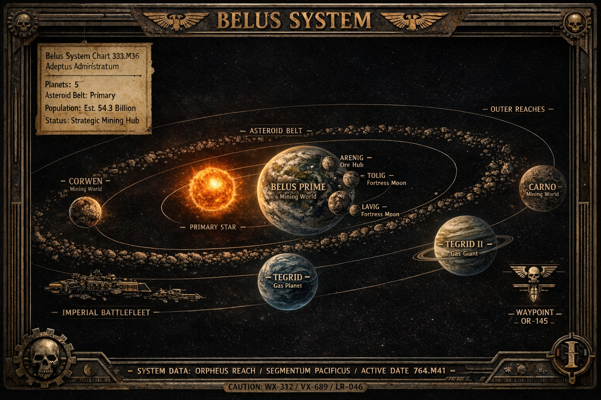

Belus System Map

Belus System — Segmentum Pacificus | Population: Est. 54.3B
Belus System Overview
Planets
| Planet | Type | Role / Notes | Population |
|---|---|---|---|
| Belus Prime | Mining World | Central hub; mountains, open-cast & deep-core mines; 3 moons: Arenig, Tolig, Lavig | 21.8B |
| Corwen | Mining World | Closest to star; requires environmental controls for workforce | 8B |
| Tegrid | Gas Planet | Small-scale gas mining for stellar fuel | Minimal / station workers |
| Tegrid 2 | Gas Planet | Almost no harvestable gas; mostly uninhabited | N/A |
| Carno | Rocky / Mining Planet | Outer system mining; planet nearly cored, rumored collapse | Minimal / station workers |
Moons of Belus Prime
| Moon | Role / Notes |
|---|---|
| Arenig | Main ore distribution hub; hundreds of haulers arrive/depart daily |
| Tolig | Military fortress moon |
| Lavig | Military fortress moon |
Asteroid Belt
Splits the system almost in half. Hundreds of mining operations (legal and illegal) take place. Large fleet patrols protect planets from rogue asteroids displaced by mining accidents.
Belus Prime — Planetary Dossier
General Overview
Belus system (circa 765.M41)
Primary Planet: Belus Prime
Affiliation: Imperium of Man, Adeptus Mechanicus
Type: Mining World
Size: 1.8 terran equivalent
Orbital Radius: 1.1 AU
Gravity: 1.2 G
Temperature/Climate: 18c Arctic to temperate
Population: 21.8 Billion
Planetary Governor: Ludlow Penrose III
System: Belus System
Sub-sector: Unknown
Segmentum: Segmentum Pacificus
Tithe Grade: Ore
History of the Belus System & Belus Prime
The Belus system was first observed in 383.M36 due to unusual warp-route fluxes detected by the Adeptus Astronomica. Initial surveys revealed three rocky worlds, two gas giants, and a vast asteroid belt that would later prove crucial to the system’s industrial output.
Belus Prime, the central planet of the system, holds a special place in Imperial history. Named for Saint Olivier Belus, the semi-legendary navigator and spiritual guide, it is said that Saint Olivier led the seven original settler families across the Immaterium to this world, establishing the foundations of human habitation in this remote sector. Evidence of earlier human activity suggests that human outposts may have existed as far back as M27, though these were cut off from the wider Imperium and likely lost to time. Certain artefacts recovered from deep-core mines are believed to originate from this primordial colonization.
Upon the planet’s formal discovery, the Imperium of Man recognized the strategic and material value of its ore deposits, essential for the production of ceramite armor and other war materiel. Belus Prime was formally claimed under Imperial law, and an Administratum presence was established, though day-to-day operations remained heavily influenced by the Adeptus Mechanicus.
To administer the growing population and ensure compliance with the Tithe requirements, the Imperium installed Governor Ludlow Penrose III, though real authority resided with the three surviving dynastic families — Gwynedd, Nefyn, and Idris — descendants of the original seven settler families. Through centuries of corporate maneuvering, war, and intrigue, these families consolidated power, controlling mining rights, infrastructure, and security forces across the planet.
Belus Prime’s history is not without turmoil. Notable incidents include:
- Et Absentis 764.M41 — Inquisitor Madwyn Starc uncovered a servitor conversion conspiracy involving the Idris family and an Adeptus Mechanicus adept.
- Mentis Viribis 744.M41 — A rogue Mechanicus attempt to create psychic-capable servitors was thwarted by Inquisitorial intervention.
The planet’s geography and infrastructure were profoundly shaped by mining. Vast mountain ranges and open-cast mines became the foundations for urban districts, while the three moons — Arenig (primary ore hub), Tolig, and Lavig (military fortresses) — ensured the system’s resource flow and defense. The asteroid belt, splitting the system nearly in half, remains a source of both wealth and danger, with numerous mining operations and patrol fleets maintaining order.
Over the centuries, Belus Prime has evolved into a well-fortified, industrious world, central to Imperial military supply chains and Mechanicus industrial production. Its population of over 53 billion souls labors under a strict bureaucratic and militarized regime, ensuring that the planet remains one of the Imperium’s most valuable and tightly controlled mining worlds.
Tithe Records
| Month | Ore (tons) | Compliance |
|---|---|---|
| 765.M41-01 | 1,200,000 | Full |
| 765.M41-02 | 1,180,000 | Full |
| 765.M41-03 | 1,210,000 | Full |
Population Ledger
| Sector | Population | Worker Class |
|---|---|---|
| Cellan District | 15,000 | Bureaucrats |
| Industrial District | 2.1B | Industrial |
| South Quarters | 1.9B | Mining |